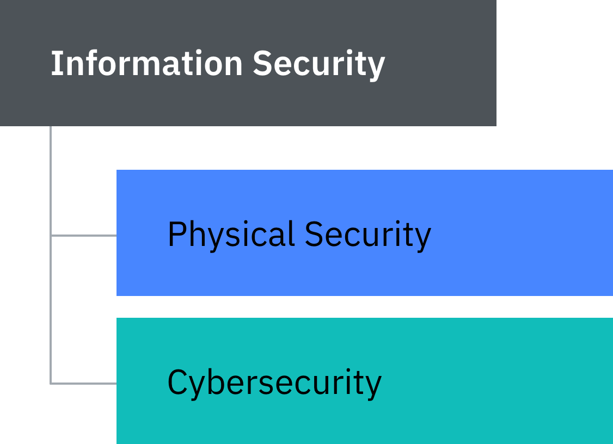
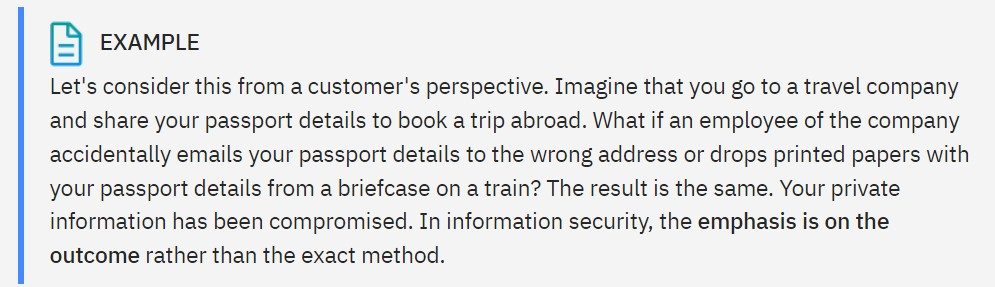
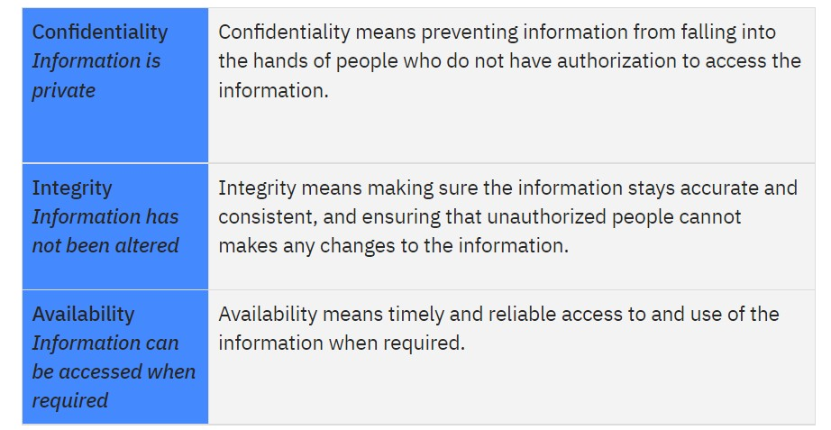
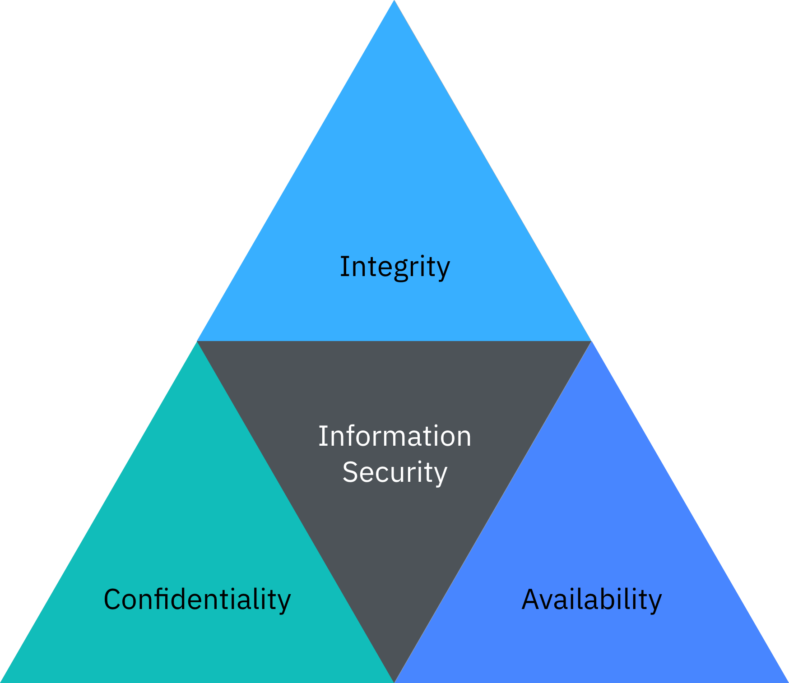
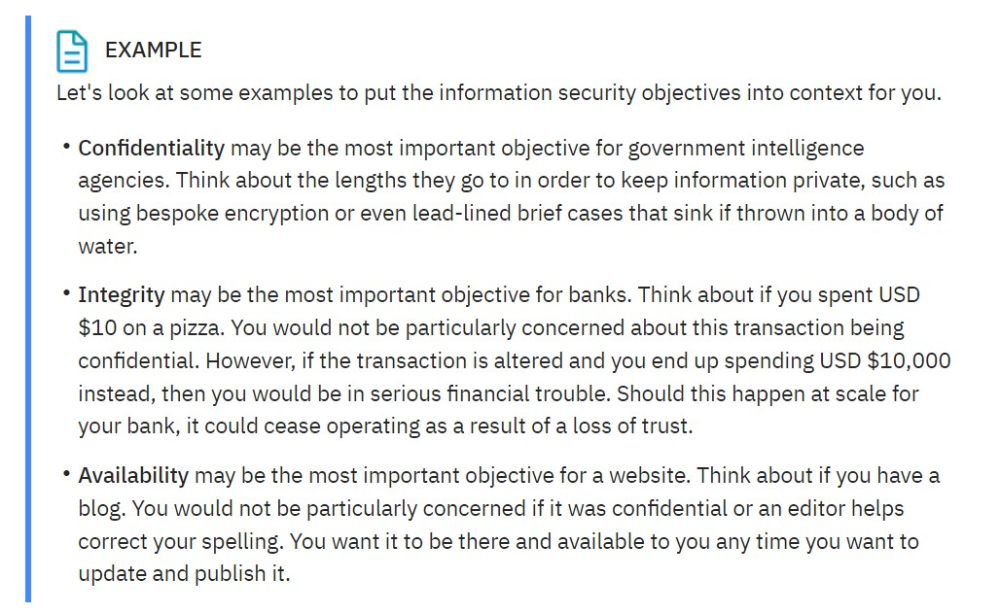

What is cybersecurity?
Information security
Cybersecurity is important because of the unprecedented amounts of data that we as individuals and organizations collect, store, and process on our electronic devices. As the volume and sophistication of cyber attacks grow, we are all tasked with safeguarding this information. Think about what we need to protect now and in our future! Let’s start by thinking about what cybersecurity is and what we are trying to accomplish. Most definitions of cybersecurity tend to focus on technology, so a typical definition might include the “security of digital systems” or “security of communications”. These definitions tend to get blurry, very quickly. For instance:
*What if a fraudster sends an email to a person claiming to be from their bank and asking for their personal identification number (PIN). Is that a cybersecurity concern?
*What if a private investigator calls an employee of a company to ask him to print some confidential files and leave the papers in the mail room them to collect. Is that a cybersecurity concern?
In the real world, most attacks typically have some digital elements as well as some human factors and occasionally a physical element too. Please keep this in mind. We should not just focus on digital elements because this limits our thought process and gives potential attackers greater flexibility.
Let’s consider a new concept called information security. Information security focuses on the value of the information we are trying to protect rather than how we protect it. The following diagram shows that under information security are the physical elements and digital elements.
*Physical security is the practice of physically protecting assets like buildings, security cameras, equipment, and property from physical threats such as theft, vandalism, fire, and natural disasters.
*Cybersecurity is the practice of protecting and recovering networks, devices, and programs from any type of malicious cyber attack.
*Good security cannot have one without the other and both must work towards the same objectives.
What are cybersecurity professionals trying to accomplish?
According to the National Institute of Standards and Technology (NIST), information security is: "The protection of information and information systems from unauthorized access, use, disclosure, disruption, modification, or destruction in order to provide confidentiality, integrity, and availability."
So, information security’s objectives are often defined using the CIA triad as a good starting point. CIA is a mnemonic for the three objectives: Confidentiality, Integrity, and Availability.
The CIA triad is a model to help guide policies for information security within an organization. Different organizations and scenarios may mean that one objective is prioritized over the others.
 